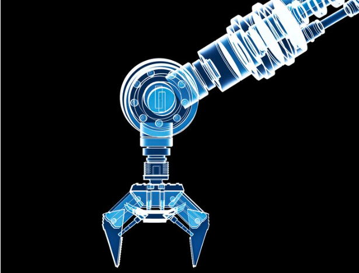

| ÓLEO-HIDRÁULICA | NEUMÁTICA | |
|---|---|---|
| FUNDAMENTOS BÁSICOS | La presión ejercida sobre él se transmite a todos los puntos con la misma intensidad | Reduciendo su volumen se aumenta la presión. Si lo expandimos nos da una fuerza útil |
| APLICACIONES | Grúas, maquinaria pesada, prensas hidráulicas, frenos | Martillos, taladros neumáticos, herramientas, frenos |
| CARACTERÍSTICAS | Más fuerza y precisión | Más velocidad y limpieza |
Neumática es la forma en que la presión del aire impulsa y mueve algo. Básicamente, la neumática da un uso práctico al aire comprimido moviendo aplicaciones como las herramientas y la maquinaria utilizadas en los sectores de la ingeniería, la fabricación y la construcción.
En circuitos neumáticos encontramos los siguientes elementos:
 ¿Qué es la hidráulica? La hidráulica es una tecnología que emplea un líquido o fluido como modo de transmisión de la energía necesaria para mover o hacer funcionar una máquina o un mecanismo. Este fluido puede ser agua o aceite aunque el más utilizado es el aceite. Cuando hablamos de aceite deberíamos emplear la palabra oleohidráulica pero en el ámbito industrial se emplea el término hidráulica para referirnos a aquello que tiene que ver con la mecánica de fluidos. ¿En qué consiste? Se trata de hacer aumentar la presión del fluido mediante una bomba para utilizarlo como trabajo útil en un actuador, normalmente un cilindro. El líquido ejerce presión sobre el cilindro que transformará su fuerza en un movimiento que será capaz de levantar un peso, abrir una puerta, accionar otro mecanismo etc. Este sistema presenta algunas ventajas respecto a los sistemas neumáticos. Al utilizar aceite, es autolubricante. El posicionamiento de los elementos mecánicos es ajustado y preciso porque el movimiento del aceite es más uniforme que el aire comprimido, transmitiendo la presión más rápido. Puede mover cargas mucho más pesadas.